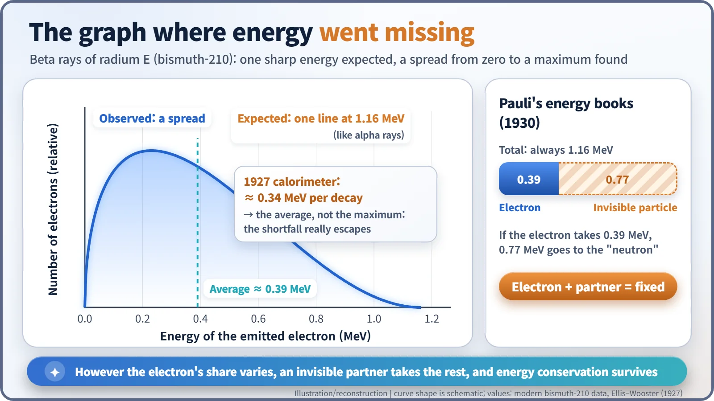
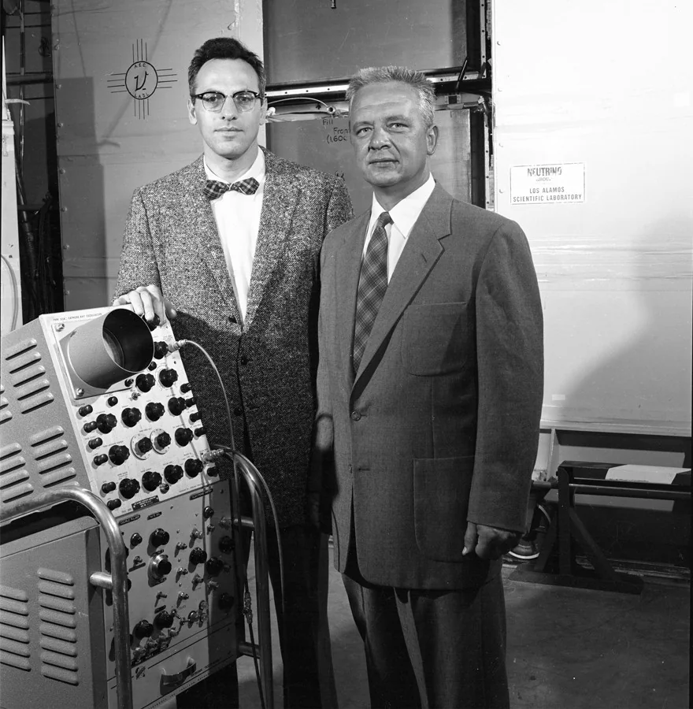
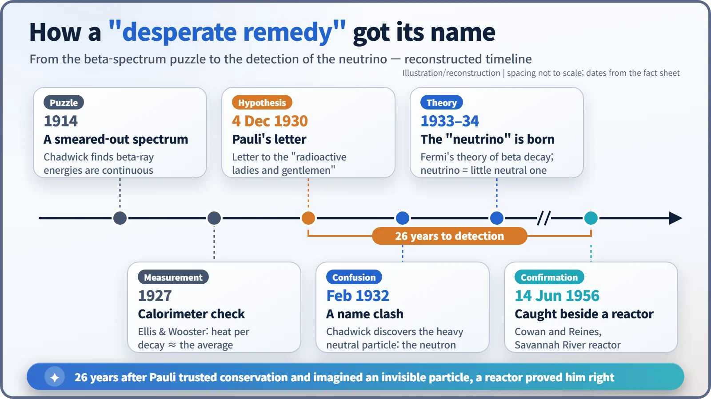

Nuclear History · 041
"Dear Radioactive Ladies and Gentlemen" — Pauli's Neutrino Hypothesis and the Case of the Missing Energy (1930)
Beta decay seemed to destroy energy, so Pauli wrote a letter proposing an unseen particle that carried off the missing share.
In December 1930, beta decay seemed to destroy energy: electrons came out with any energy from zero to a maximum. Rather than give up energy conservation, Wolfgang Pauli proposed in a letter to colleagues at a meeting in Tübingen that an unseen, very light neutral particle carried off the missing share. Enrico Fermi later named it the neutrino, and in 1956 it was finally detected beside a nuclear reactor.
A letter instead of a lecture
"Liebe Radioaktive Damen und Herren" — "Dear Radioactive Ladies and Gentlemen."
That is how a letter written in Zurich on 4 December 1930 begins. Its author was Wolfgang Pauli (1900–1958), a 30-year-old professor of theoretical physics at the Swiss Federal Institute of Technology (ETH). Its readers were the radioactivity researchers gathered at a regional physics meeting in Tübingen, Germany, Lise Meitner among them. It was not a journal paper, nor a lecture. Yet this letter is where a particle nobody had ever seen makes its first appearance. Today we call it the neutrino. [1] [3]

The books would not balance
The trouble started with beta decay, in which a radioactive nucleus spits out an electron (a beta ray) and turns into a different element. Alpha rays from a given element always come out with the same energy, which makes sense: the nucleus starts in one definite state and ends in another, so the difference should be one definite amount. Beta rays should have behaved the same way.
They did not. In 1914, a young James Chadwick, then working in Berlin, measured beta electrons with a counter and found that their energies were not a single value but spread all the way from zero up to a maximum. It was like wiring the same sum of money again and again and seeing a different amount land in the account every time. [4]
Could the detectors simply be missing something? In 1927, Charles Ellis and William Wooster in Britain put radium E (today's bismuth-210) inside a calorimeter and measured all the heat its decays produced. The answer was about 0.34 MeV per decay: not the maximum of around 1 MeV, but roughly the average. The energy was not leaking out of the apparatus. It was genuinely vanishing. [6]

Things were serious enough that Niels Bohr was prepared to consider that energy conservation might fail inside the atomic nucleus.
A "desperate remedy"
Pauli bet the other way. Faced with the continuous beta spectrum and the "wrong" statistics of nitrogen nuclei, he wrote, he had hit upon a "desperate remedy" (in German, "verzweifelten Ausweg"; the English wording here and below is a translation) to save the law of energy conservation. There might be, inside nuclei, electrically neutral particles with spin 1/2, "which I will call neutrons". [1] [2]
Suppose such a particle is emitted together with the electron in beta decay, and the energies of the two always add up to the same total. Then the puzzle disappears. If the electron leaves with 0.39 MeV, its invisible partner carries off the rest. Detectors only registered the electron, so energy merely looked lost. The books balance after all.
The letter is surprisingly specific. The mass should be of the same order as the electron's, and in any case no more than 0.01 of a proton's mass. Its penetrating power might equal that of a gamma ray, or be about ten times greater. Yet Pauli was also modest: for the time being, he did not dare to publish anything about the idea, since if such particles existed they would surely have been seen long ago. Still, "only those who dare can win", he wrote, and closed with: "So, dear radioactive people, examine and judge."
Why did he not go to Tübingen himself? The letter says so plainly: he was indispensable in Zurich because of a ball held there on the night of 6 to 7 December. This is not a later anecdote; it is in the letter. He signed off as "your most humble servant, W. Pauli". The surviving text is a typed copy marked with the date 15 December 1956, kept in the Pauli Archive at CERN. [1] [3]
Same name, different particle
In February 1932, Chadwick discovered a neutral particle as heavy as a proton and called it the neutron. Pauli's light "neutron" now shared its name with something completely different: one a heavy building block of the nucleus, the other a ghostly particle lighter than an electron.
The Italian physicist Enrico Fermi sorted out the name. Adding the Italian diminutive ending "-ino", he called Pauli's particle the neutrino, "the little neutral one". Sources disagree on exactly when Fermi first used the word, but it took hold through his theory of beta decay, published in 1933–1934. There was a twist, too: Pauli had imagined the particle sitting inside the nucleus all along, whereas Fermi's theory had it created at the very moment a neutron turns into a proton. [4]
Twenty-six years later, beside a reactor
The prediction had a long wait. Neutrinos barely interact with matter; they pass straight through the Earth. But a nuclear reactor, where fission fragments undergo one beta decay after another, turned out to be an enormous source, releasing about six of them per fission (strictly speaking, antineutrinos). On 14 June 1956, Clyde Cowan and Frederick Reines sent Pauli a telegram: their experiment beside the Savannah River reactor in South Carolina had detected the neutrino. [3] [5]

Modern measurements put the neutrino's mass at less than a millionth of the electron's, far lighter than Pauli's upper limit. But his real achievement was not a number; it was an attitude. When the books did not balance, he refused to throw away the principle and went looking for the entry nobody could see. A letter sent in place of a trip to Tübingen, because of a ball in Zurich, ended up defending the accounting rules of nuclear physics.
